Sandro Botticelli
Click on the images to enlarge
1 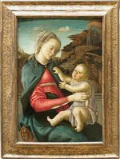
2 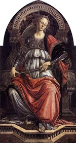
3 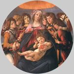
4 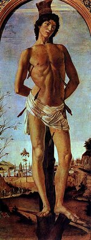
5 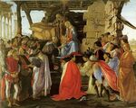
6 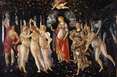
7 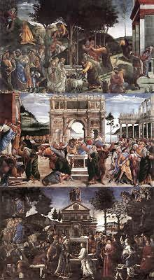
8 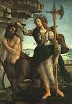
9 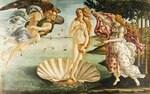
10 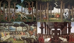
11 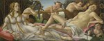
12 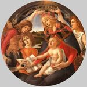
13 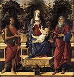
14 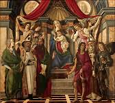
15 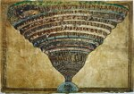
16 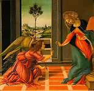
17 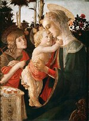
18 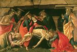
19 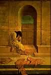
20 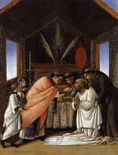
21 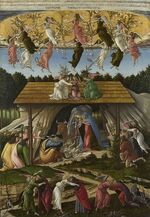
22 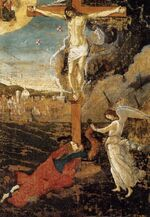
Alessandro di Mariano Filipepi, known as Sandro Botticelli
(Florence 1445 – Florence 1510)

Introduction
Son of Florentine tanner Mariano Filipepi, Alessandro, known as Sandro, got the nickname ‘Botticelli’ for reasons that are still uncertain. Around 1464, he entered the studio of Filippo Lippi for around three years. Though he did make the most of the teachings of his master, a creator of dense yet elegant forms, he seems to have shown even more interest in the experiments of two artists belonging to the second generation of the Florentine Renaissance: Andrea Verrocchio, whose assistant he was for a time, and Piero Pollaiolo. Their nervous, refined style took new advantage of anatomy, and in the case of the latter, of the representation of movement. Through the appeal of his unstable manner, the sculptor Agostino di Duccio (1418 – after 1481) must also have contributed to Botticelli’s training.
The painter in search of his own style
Several Madonna and Childs (1) date from this period, generally accompanied by aristocratically graceful angels; In them, Lippi’s influence can be seen slowly giving way to Verrocchio’s. Among these Madonnas can be mentioned those in the ‘Accademia’ and the Uffizi Gallery in Florence, the Capodimonte Art Gallery in Naples, the Fesch Museum in Ajaccio, the Louvre, the National Gallery in London, the Washington National Gallery, etc. Botticelli obtained his first official commission in 1470, through the support of Tommaso Soderini, a confidant of the Medici: Fortitude (2), an allegorical figure for the Commercial Court in Florence. This panel, now in the Uffizi, sees the influence of Piero Pollaiolo—who had originally been asked to paint the complete series of the Seven Virtues—and of Verrocchio prevailing once and for all over that of Lippi. The Madonna with Six Saints (3) (Uffizi) is close to Fortitude in style and doubtless in date. In 1472, Botticelli enrolled at the Academy of St Luke. It was around this time he painted the two small panels of the Story of Judith (Uffizi), of precious, brilliant workmanship. The St Sebastian (4) in the Berlin Museum, possibly from the Santa Maria Maggiore in Florence, seems slightly later than these; the quite taut anatomy is reminiscent of Pollaiolo, but the meditative expression reflects a deeper spirituality. In 1474, Botticelli was called to Pisa to complete the cycle of murals in the Campo Santo, but he was unable to take on this project.
Medici patronage
Returning to Florence, Botticelli was given the task of adding a figure of Pallas to Giuliano de’ Medici’s standard for a jousting tournament in the Piazza Santa Croce in 1475: painters in that period did not turn their noses up at this sort of task. In this way, Botticelli came to be involved with the Medici circle. Around the same date, a friend of that illustrious family, money changer Giovanni Lami, commissioned from him the panel of the Adoration of the Magi (5) (Uffizi) for his chapel in Santa Maria Novella. This was the painter’s first major work, with a very dense composition; Botticelli himself is depicted in it, along with several of the Medici: Cosimo the Elder, Piero ‘il Gottoso’, Giovanni, Giuliano, Lorenzo. It may be compared with some fine individual portraits: one of a man holding a medallion of Cosimo the Elder (Uffizi), and the one of Giuliano de’ Medici (National Gallery, Washington).
In 1478, Botticelli was given the task of painting the effigies of the members of the Pazzi conspiracy, hung after their failure; this circumstantial work has not survived. Around the same date, the artist finished the Madonna with eight Angels in the Berlin Museum, ‘tondo’, undoubtedly coming from San Salvatore al Monte, and above all his most famous picture, La Primavera (6) (Spring), commissioned in 1477 for two Medici brothers, Lorenzo and Giovanni di Pierfrancesco, and hung in the Villa di Castello near Florence (now in the Uffizi). The linear grace that blossoms in it, lending a tangible appearance to the idealized world of the Neoplatonist thinkers, and by the same token confirming that Botticelli had found a totally personal language of his own, also inspired the two allegorical murals in the Villa Tornabuoni-Lemmi (now in the Louvre), the dates of which are not known: a young man before the Assembly of the Arts, personified as female figures; a young woman receiving gifts from Venus accompanied by the Graces.
Interlude in Rome
Botticelli’s stay in Rome, a key episode in his career, took place in 1481 and 1482. Under the terms of a contract signed on the 27th October 1481, Pope Sixtus IV asked him to collaborate with Cosimo Rosselli (1439–1507), Ghirlandaio and Perugino — soon to be joined by Signorelli, Pinturicchio (1554 ?–1613) and Piero di Cosimo (c. 1462–1521) — to paint frescoes of holy stories drawing parallels between the Old and New Testaments, and at the same time containing allusions to the Pontiff’s ministry, on the walls of the chapel he had just had built in the Vatican, known as the ‘Sistine Chapel’. Botticelli’s part consisted of three of these compositions: The Youth of Moses, The Punishment of the Rebelling Levites and The Temptation of Christ (7). It’s worth noting that each of them combines several episodes, following a mediæval tradition. The brilliant Adoration of the Magi in the Washington National Gallery is without doubt another testament to the master’s activities in Rome.
The period of glory in Florence
In Florence, the humanism passionately being cultivated by Lorenzo the Magnificent and his entourage found its best interpreter in the language of art in Botticelli. Once again, it was for Lorenzo and Giovanni di Pierfrancesco that he painted, shortly after his return, the two famous mythological pictures for the Villa di Castello, now in the Uffizi: Minerva and the Centaur (8), The Birth of Venus (9); and it was probably for ‘Il Magnifico’ that he depicted the Story of Nastagio degli Onesti (10), after Boccaccio, in four panels, three of which are in the Prado in Madrid and one in a private collection in the US. The picture of Mars and Venus (11) (National Gallery, London) was perhaps commissioned by another famous family, the Vespucci. Around 1485, we see Botticelli returning to the theme of the Madonna, with an ease born out of maturity; the most famous variations are the Madonna with the Book in the Poldi Pezzoli Museum in Milan, the Madonna of the Magnificat (12) and the Madonna with Pomegranate in the Uffizi, both painted in ‘tondo’, and lastly the Bardi Madonna (13) (Berlin), commissioned by Agnolo Bardi for his chapel in Santo Spirito in Florence. Shortly before 1490, the painter obtained the commission, quite rare in his career, for two larger-scale works: the St Barnabas’ Altar-piece (14) (Uffizi), for the Florentine Brotherhood of Doctors and Pharmacists, the main panel uniting the Virgin Mary seated on a throne, six saints, and four angels, with a background of architecture, and with diverse scenes depicted on the predella; the St Mark’s Altar-piece (Uffizi), for the Goldsmith’s Guild, with the Coronation of the Virgin and four saints on the main panel, and holy stories on the predella — all showing evidence of work by his pupils.
|
Illustrations for Dante’s Divine Comedy Sandro Botticelli began illustrating Dante’s Divine Comedy at the request of Lorenzo di Pier Francesco di Medici around 1490. His drawings let us share the Florentine artist’s fascination for this masterpiece of poetry and humanism from the imagination of Dante Alighieri. Click HERE to see these drawings. |
The final crisis
The death of Lorenzo the Magnificent in 1492 brought to an end the most brilliant period of the Florentine civilization. Following the misfortunes that the bad government of Piero de’ Medici earned for the city, Savonarola’s theocratic dictatorship got the better of humanism. Florence’s political and moral crisis goes a long way towards explaining the more personal crisis of which Botticelli himself showed signs towards the end of his life. His last works reflect an exaltation of religious feeling that is no stranger to the influence of Savonarola.
In this period, also that of the drawings for Dante’s Divine Comedy (15), there was only one major picture on a secular subject, the Calumny, painted for Antonio Segni after the descriptions of the ancient masterpiece by Apelles; in it, humanism is once again filled with Christian meditation. Already, the Annunciation (16) painted around 1490 for Santa Maria Maddalena dei Pazzi (Uffizi) renewed this theme through dynamic attitudes and a dramatic climate, including the Standing Madonna with Child and St John the Baptist (17) (Pitti palace), a few years previously, offers a new example in a singularly bold layout. The two Pietàs painted around 1495 (one in the Munich Art Gallery (18) and one in the Poldi Pezzoli Museum in Milan) take the tragic tension to its peak, and the isolated figure (undoubtedly the abandoned Thamar) known as La Derelitta (19) (Rospigliosi Palace, Rome) expresses a sentiment of anguish. This didn’t prevent Botticelli painting at the same time some small panels of precious workmanship, in a language that is less bitter, and yet suited to the expression of the inner life: St Augustine Writing in the Uffizi, the Annunciation and the Communion of St Jerome (20) in the Metropolitan Museum, New York, the scenes from the Life of St Zenobius depicted on four panels (London, New York and Dresden). Lastly, Savonarola’s preachings seem to have directly inspired the Mystical Nativity (21) in the National Gallery in London (1501) and the Crucifixion with a view of Florence (22) in the Fogg Art Museum in Cambridge (Massachusetts).
When Botticelli died, young artists took the Renaissance in a new direction: Michelangelo, Leonardo da Vinci, Andrea del Sarto, Raphael. Already outmoded, his painting fell into obscurity, and it wasn’t until the 19th century regained the position it deserves.
Line, movement and colour
In the Florentine Renaissance, a great movement can be discerned, initiated by painters like Masaccio and Uccello in the first half of the 15th century, the principle ambition of which was to depict a world where tangible appearances are subject to the laws of intelligence, where dense volumes occupy a space organized rationally by geometric perspective.
Generally, Botticelli does not give priority to this effort, he often even goes as far as contradicting it — not that he hadn’t already proved he was capable of it: theAdoration of the Magi in the Uffizi and the one in the Washington National Gallery each offer a brilliantly-calculated composition in depth whose strict convergence obeys a principle of unity; in the relief of the figure, the St Augustine fresco in the Ognissanti church in Florence (c. 1480) proves an authority reminiscent of Andrea del Castagno, while the depiction of the accessories in it demonstrates a robust, meticulous realism quite rarely found in the painter’s work.
Botticelli might have persevered with research in this direction, but his truly personal vision is that of a more arbitrary world that he managed to adorn with a fascinating poetry. The figures here are not scaled according to the requirements of a sovereign space, but are presented in a plane very close to the spectator, before a background that tends to limit the depth, whether he takes these elements from architecture, drapes, or even landscape. These figures sometimes gracefully espouse the circular form of the ‘tondo’ (Madonna of the Magnificat), sometimes they define a composition in a frieze (Spring), sometimes they are even put in a mediæval-style setting of theological intent (Sistine Chapel frescoes, Nativity in London); but what brings them all together is a supple, almost musical rhythm, reflecting the movement of a sort of dance that prevents the forms from being heavy. This movement, essential in Botticelli’s world, is captured in line, which has greater importance than volume. Nervous, improvised, with a very personal sensitivity, he makes the human figure waver, or sometimes torments it, breaks it, according to the painter’s whim; he emphasizes the changes of direction in the outlines, the asymmetric features of faces; but this very irregularity avoids its getting confused with decorative arabesques: it is the expression of thought.
However, with Botticelli this supremacy of the line does not assume the indifference for the pictorial material that is often attributed to the Florentine School. The refinement of his workmanship and his taste for colour are especially evident in a series of small pictures as precious as illuminations, found throughout his career, from the Story of Judith to the Life of St Zenobius. But this remains true also for the larger-scale works, whether in fresco, tempera, or especially egg tempera. The colours are sometimes sparkling, as in the Madonna of the Magnificat, sometimes more matt, as in the Birth of Venus, or rather muted, as in Spring; but are always harmonious, transparent, seemingly infused with a crystal-clear light.
Humanism and Christianity
Botticelli’s linear style and worried grace would perhaps make him a precursor of the mannerists of the 16th century, had he not first and foremost been expressing the spiritual requirements of his times. Botticelli’s œuvre is reliant on Florentine humanism, and more particularly to the Neoplatonist thinking that flourished in the entourage of Lorenzo the Magnificent, with Marsilio Ficino as its most eloquent interpreter. According to this way of thinking, it was necessary to see the reflection of the world of ideas in the tangible world. With Botticelli, humanism rarely appears in an archæological aspect, with the exception of the depiction of certain monuments, like Constantine’s Arch in the Sistine Chapel frescoes, or in the reconstruction of Apelles’ Calumny according to the texts by Lucian and L. B. Alberti, an exercise that would have been laboured had it not been for the dramatic inspiration the painter puts into it. More often, it is myths whose contents, with his patrons’ consent, Botticelli sought to express in a manner that is sometimes quite esoteric. For example Spring — the interpretation of which is controversial — seems to be contrasting carnal love and the aspirations of the soul either side of Venus. The Birth of Venus is said to be a hymn to universal fertility, and Minerva and the Centaur a symbol of human nature’s contradictory tendencies.
All this is said with a restraint that proves Botticelli was keeping his eyes set firmly on the Christian ideal. We can pass smoothly from his secular pictures to his religious painting, where the deepening of the subject is no less worthy of note: for him, humanism and religion are the two sides of the same spiritual quest. But the serenity that predominates in the juvenile Madonnas gradually gives way to a feeling of restlessness. Already the Madonna with Pomegranate expresses the presentiment of the Passion. This pessimism is accentuated in the painter’s last years with the calling into question of humanism. He breaks into a tragic tone with the two Pietàs, and the Crucifixion in the Fogg Art Museum closes his œuvre with a sort of prediction of Florence’s misfortunes.

© 2006 Umanista.Net